Project 5 / Face Detection with a Sliding Window

Example Result of 2018 Computer Vision Class.
Outline:
In this project, we use HoG and SVM to create a multi-scale human face detector.
- Collect Positive 36x36-HumanFace Data From Caltech CropFace Dataset.
- Random Collect Haphazard Negative Data From SUN Dataset
- Train Linear SVM Classifier
- Use SVM Classifier to Create a muilt-Scale Human Face Detector
- Extra Credit
1. Collect Positive 36x36-HumanFace Data From Caltech CropFace Dataset
To extract positive training data, we browse 6,713 cropped 36x36 faces from Caltech's face dataset. Then, by using VL_hog in VL_feat, we retrieve Histogram of Gradient(HoG) features to represent faces. To improve performance, we can flip images from left to right to augment our positive training data.
Code Example:
D=temp_size/cell_size)^2*31;
for i=1:2*num_images
img = imread(fullfile(image_files(ceil(i/2)).folder,image_files(ceil(i/2)).name));
img=single(img)/255;
if(size(img,3) > 1)
img = rgb2gray(img);
end
if mod(i, 2) == 0
%If i%2==0: flip image
hog=vl_hog(fliplr(img),cell_size,'verbose');
else
hog=vl_hog(img,cell_size,'verbose');
end
features_pos(i,:)=reshape(hog,[1,D]);
end
HoG Results:
| cell size = 2 | cell size = 4 | cell size = 6 |
| 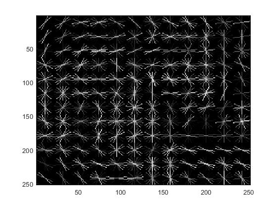 | 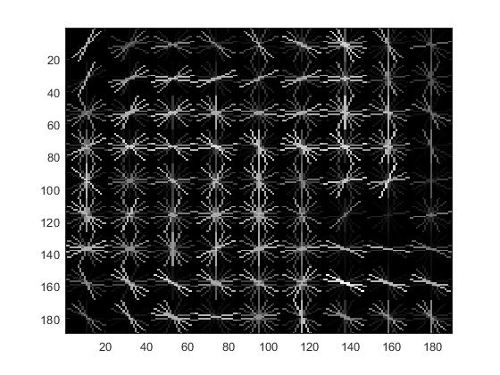 | 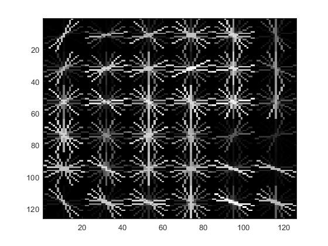 |
2. Random Collect Haphazard Negative Data From SUN Dataset
To extract negative training data, we browse 275 Non-Face images from SUN dataset. Like positive features, we use VL_hog to retrieve Histogram of Gradient(HoG) and use it to represent our non-face features. To keep the same dimensionality, we align our cropping window the same as the positive feature's template size (which is 36x36). To increase training data, we random crop windows within 275 images and generate over 10,000 negative training examples.
Code Example:
D=(temp_size/cell_size)^2*31;
k=1; %Total
scale_factor=0.9;
for i=1:num_images
img = imread(fullfile(image_files(i).folder, image_files(i).name ));
img = single(img)/255;
if (size(img,3)>1)
img = rgb2gray(img);
end
num_of_feat=floor(size(img,1)/temp_size)*floor(size(img,2)/temp_size);
while (size(img,1)>=temp_size) && (size(img,2)>=temp_size) && (k<=num_samples)
for j = 1 : num_of_feat
x = ceil(rand() * (size(img,1) - temp_size)) + 1;
y = ceil(rand() * (size(img,2) - temp_size)) + 1;
%Random crop image into 36x36 box:
box = img(x : x + temp_size - 1, y : y + temp_size - 1);
hog = vl_hog(single(box), cell_size);
hog = reshape(hog,[1,D]);
features_neg(k, :) = hog;
k = k + 1;
end
img = imresize(img, scale_factor);
num_of_feat=floor(size(img,1)/temp_size)*floor(size(img,2)/temp_size);
end
end
3. Train Linear SVM Classifier
In this part, we use function vl_svmtrain to process our positive/negative training data. With properly selected lambda, we can get accuracy 100% with True Positive Ratio: 57.2% and False Negative: 42.8%.
Code Example:
lambda=0.00001;
%Training Data:
X_pos=features_pos;
X_neg=features_neg;
%Training Label:
X_pos_label=ones(size(X_pos,1),1);
X_neg_label=-ones(size(X_neg,1),1);
%Collect Data to SVM:
X=vertcat(X_pos,X_neg);
Y=vertcat(X_pos_label,X_neg_label);
%X DxN matrix, Y N element
[w b]=vl_svmtrain(X',Y,lambda);
SVM Training Result:
| 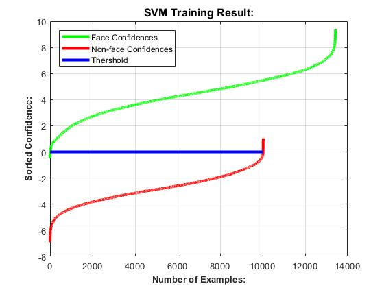 |
4. Use SVM Classifier to Create a muilt-Scale Human Face Detector
In this part, we use linear SVM to detect all possible faces in our image. At first, we create non-overlapping boxes in our input image. Then, we transfer each box into HoG representation. By using SVM model from Step 3, we can get the confidence level of each box. After collecting all boxes at all scale, we use non-maxima suppression to remove repeated boxes and preserve the most confident ones.
Under single-scale condition, we first get accuracy about 39.2%, which is because our testing data does not always have the same face size as our training examples. Then, we downscale our negative training examples and testing data with scale factor 0.9 in each iteration. After this, we can get accuracy over 83%. By flipping our positive training faces and double our positive training, we can improve about 3% accuracy. Ater adjust cell size to 3 and implement hard negative mining, we can achieve accuracy up to 93.4%.
Code Example: Face Detection with Multi-Scale Sliding Windows
while (size(img,1)>temp_size) && (size(img,2)>temp_size)
hog=vl_hog(img, cell_size);
for y=1:(size(hog,1)-(temp_size/cell_size))
for x=1:(size(hog,2)-(temp_size/cell_size))
hog_feat = hog(y:(y+(temp_size/cell_size)-1), x:(x+(temp_size/cell_size)-1),:); %hog(1:36,1:36,[1:31])
hog_feat = reshape(hog_feat,[1,D]);
conf = hog_feat * w + b;
if (conf > threshold)
x_min = (x-1)*cell_size;
y_min = (y-1)*cell_size;
x_max = x_min + temp_size;
y_max = y_min + temp_size;
box = round([x_min, y_min, x_max, y_max] * scale);
cur_bboxes = [cur_bboxes; box];
cur_confidences = [cur_confidences; conf];
cur_image_ids = [cur_image_ids; test_scenes(i).name];
end
end
end
img = imresize(img, scale_factor);
scale=scale/scale_factor;
end
%Run Non-Max Suppression:
[is_maximum] = non_max_supr_bbox(cur_bboxes, cur_confidences, img_size);
cur_confidences = cur_confidences(is_maximum,:);
cur_bboxes = cur_bboxes( is_maximum,:);
cur_image_ids = cur_image_ids( is_maximum,:);
%Collect Data:
bboxes = [bboxes; cur_bboxes];
confidences = [confidences; cur_confidences];
image_ids = [image_ids; cur_image_ids];
5. Extra Credit
5.1:Implement Hard Negative Mining (+10%)
In hard negative mining, we adjust our run_detector to retrieve non-face features with high confidence. Because our estimation should be within [-2,2], the optimum goal of hard negative mining is to remove features which are not faces but with high confidence in our primal SVM classifier. To avoid overfitting, we can still employ maximum suppression. After adding this function, we can improve our accuracy from 88.3 to 88.9(+1.6%) under cell size=6.
Code Example:
threshold=2.0;
for i = 1:length(test_scenes)
features=[];
while (size(img,1)>temp_size) && (size(img,2)>temp_size)
hog=vl_hog(img, cell_size);
for y=1:(size(hog,1)-(temp_size/cell_size))
for x=1:(size(hog,2)-(temp_size/cell_size))
hog_feat = hog(y:(y+(temp_size/cell_size)-1), x:(x+(temp_size/cell_size)-1),:); %hog(1:36,1:36,[1:31])
hog_feat = reshape(hog_feat,[1,D]);
conf = hog_feat * w + b;
if (conf > threshold)
x_min = (x-1)*cell_size;
y_min = (y-1)*cell_size;
x_max = x_min + temp_size;
y_max = y_min + temp_size;
box = round([x_min, y_min, x_max, y_max] * scale);
cur_bboxes = [cur_bboxes; box];
cur_confidences = [cur_confidences; conf];
cur_image_ids = [cur_image_ids; test_scenes(i).name];
features = [features; hog_feat];
end
end
end
img = imresize(img, scale_factor);
scale=scale/scale_factor;
end
[is_maximum] = non_max_supr_bbox(cur_bboxes, cur_confidences, img_size);
cur_confidences = cur_confidences(is_maximum,:);
cur_bboxes = cur_bboxes( is_maximum,:);
cur_image_ids = cur_image_ids( is_maximum,:);
features = features( is_maximum,:);
bboxes = [bboxes; cur_bboxes];
confidences = [confidences; cur_confidences];
image_ids = [image_ids; cur_image_ids];
mhn_features= [mhn_features;features];
end
5.2:Find and Utilize Alternative Positive Training Data: ORL Dataset from AT&T (+10%)
In this part, I add "The ORL Database of Faces" from AT&T Lab at Cambridge University. The main reason I choose this dataset is I found there are some tilting heads in our extra-credit images. In this case, ORL dataset is composed of 400 faces with different angles. After experiment, this dataset can help me improve 0.6% performance on MIT+CMU dataset.
| 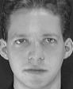 |  |
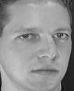 | 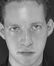 | 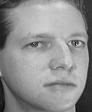 | 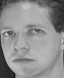 | 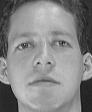 | 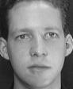 | 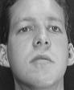 | |
| 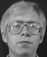 |  |
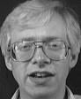 | 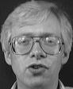 | ||||||
| 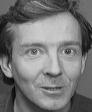 | 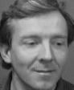 |  |
 |
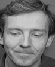 | 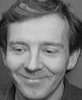 | 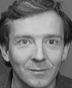 | |||
| 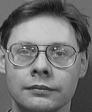 | 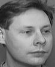 | 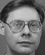 |  |
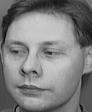 | 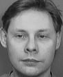 | 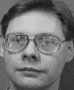 | 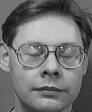 | ||
| 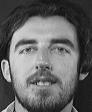 | 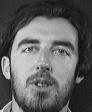 |  |
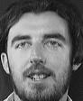 | 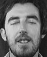 | 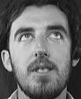 | 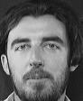 | 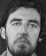 | 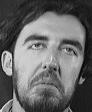 | 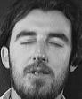 |
| 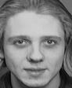 | 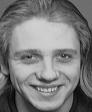 | 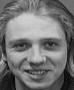 | 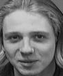 | 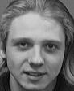 | 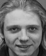 | 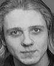 | 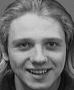 | 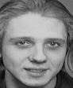 | 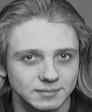 |
 |
|||||||||
| 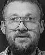 | 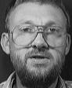 | 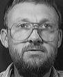 | 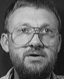 |
5.3:Additional Classification:Nearest Neighbor (+10%)
Code Example:Nearest Neighbor
function conf = Nearest_Neighbor(X, Y, hog_feat)
[m,n]=size(X);
row_min=0;
dist=zeros(m,1);
for i=1:m
dist(i)=sqrt(sum(abs(X(i,:)-hog_feat))); %RMS distance
end
row_min=min(dist);
for i=1:m
if dist(i)==row_min
conf=Y(i);
end
end
5.4:Run Bonus Scenes
Face Detection Results
| Cell Size | Precision | Viola Jones | Example Image |
| cell size = 6 | 89.5% | ||
| cell size = 4 | 92.6% |  |
|
| cell size = 3 | 92.9% | ||
| cell size = 3 with Hard Negative Mining | 93.4% |